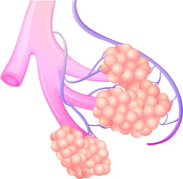

1-(Brasil escola) A figura abaixo mostra uma estrutura muito importante do sistema respiratório. Observe
a figura e marque a alternativa que indica corretamente o nome dessa parte do sistema respiratório e os
processos que nela ocorrem.

02 - (Mundo educação ) O caminho que o ar percorre até chegar aos alvéolos é constituído por:
3 - (URCA) Nos alvéolos pulmonares, o sangue elimina:
4 - (PUC-MG) A troca gasosa de oxigênio e gás carbônico nos alvéolos se faz: